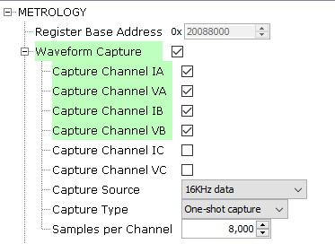
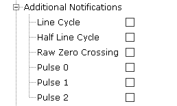
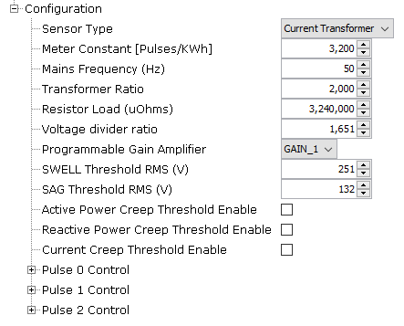
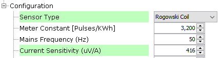
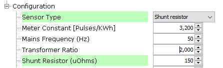
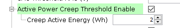
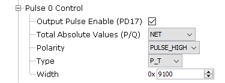
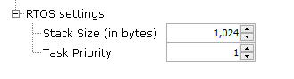
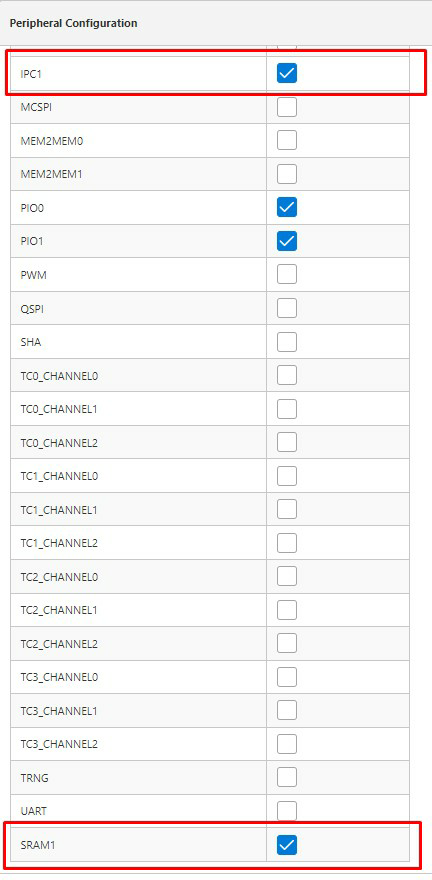

1.1.3.3 Metrology driver Configurations
Metrology Specific User Configurations
Metrology Driver library should be configured via MCC. Below is the Snapshot of the MCC configuration window for Metrology driver and brief description.
Register Base Address:
Specifies the PLC device physically connected.
The pins in use will vary depending on the device selected.
Waveform capture:
Enable waveform capture.
The waveform capture feature is a powerful tool allowing the Core 0 to access to the metrology samples. The data can be processed by the Demo Meter Application running on Core 0, or can be sent to an external device for being analyzed.
The waveform capture function is useful in two main scenarios:
When the product is being developed it's an excellent engineering tool for analyzing the acquired data. The signals can be inspected in order to obtain more information about a hypothetical cross-talk, or to assess how some critical sections of the electronic design (power supplies, communications modules, relays, switching devices, ...) could be introducing noise in the metrology channels.
At the release time, it allows to include new functionality in the final product. Typical examples: waveform monitors, harmonic analysis of the captured data (FFT), etc.
Figure . Metrology Driver waveform configuration options Up to 6 channels of data may be captured at the same time.
Capture Channel IA:
Enable waveform capture of channel IA.
Capture Channel VA:
Enable waveform capture of channel VA.
Capture Channel IB:
Enable waveform capture of channel IB.
Capture Channel VB:
Enable waveform capture of channel VB.
Capture Channel IC:
Enable waveform capture of channel IC.
Only valid for PIC32CXMTC_DB board.
Capture Channel VC:
Enable waveform capture of channel VC.
Only valid for PIC32CXMTC_DB board.
Capture Source:
All captured data is after Vref compensation has been applied and are scaled values (normalized by the appropriate K_Ix and K_Vx). In the case of 16kHz sampling data, the calibration constants have not been applied. Possible values could be:
Capture 16kHz data before DSP filtering.
Capture 4kHz FBW data (Full Bandwidth = fundamental + harmonics).
Capture 4kHz NBW data (Narrow Bandwidth = fundamental only).
Capture 8kHz FBW data (Full Bandwidth = fundamental + harmonics).
Capture Type:
Capture must be enabled to initiate a capture process. Once enabled, capture occurs based on the requested capture mode. If enabled and a continuous capture mode is selected, capture continues until it is disabled. If enabled and a one-shot capture mode is selected, capture continues until appointed number samples is captured.
Samples per Channel:
Specifies the buffer size used per channel for the capture function in units of 32-bits value.
Size of the global buffer in bytes where the data set will be stored is obtained as (Num_channels) x (Size_per_Channel) x 4.
Additional notifications:
Additional notifications have different callback functions associated with them. These callback functions are triggered from an interruption context, therefore it is strongly recommended not to put large code inside.
Figure . Metrology Driver additional IPC notifications Line Cycle:
Enable Line Cycle interrupt.
This interrupt is generated every full line cycle. It means that the frequency and accumulated energy associated with pulse have been updated. Unlike the RZC_IRQ, the FULL_CYCLE_IRQ uses the 4KHz narrowband filtered voltage channels and exhibit a deterministic but frequency-dependent phase delay.
Half Line Cycle:
Enable Half Line Cycle interrupt.
This interrupt is generated every half line cycle. It means that swell and sag flags have been updated. Unlike the RZC_IRQ, the HALF_CYCLE_IRQ uses the 4KHz narrowband filtered voltage channels and exhibit a deterministic but frequency-dependent phase delay.
Raw Zero Crossing:
Enable Raw Zero Crossing interrupt.
This interrupt is generated on zero-crossings using the unfiltered “raw” 16KHz data stream of the selected direction and selected voltage channel.
Pulse 0:
Enable Pulse 0 interrupt.
This interrupt is generated immediately after their respective pulse has computationally committed to be generated, but not necessarily occurred, and is not subject to the pulse's PC0_OVERRIDE control bit.
Pulse 1:
Enable Pulse 1 interrupt.
This interrupt is generated immediately after their respective pulse has computationally committed to be generated, but not necessarily occurred, and is not subject to the pulse's PC1_OVERRIDE control bit.
Pulse 2:
Enable Pulse 2 interrupt.
This interrupt is generated immediately after their respective pulse has computationally committed to be generated, but not necessarily occurred, and is not subject to the pulse's PC2_OVERRIDE control bit.
Enable Channels
Figure . Metrology Driver channels 
Enable Channel I0:
Enable channel I0 on ATSense AFE.
Enable Channel I1:
Enable channel I1 on ATSense AFE.
Enable Channel V1:
Enable channel V1 on ATSense AFE.
Enable Channel I2:
Enable channel I2 on ATSense AFE.
Enable Channel V2:
Enable channel V2 on ATSense AFE.
Enable Channel I3:
Enable channel I3 on ATSense AFE.
Only valid for PIC32CXMTC_DB board.
Enable Channel V3:
Enable channel V3 on ATSense AFE.
Only valid for PIC32CXMTC_DB board.
Configuration:
Figure . Metrology Driver control configuration options Sensor Type:
Selects the type of current and voltage sensor used. For each channel selected as using a Rogowski sensor, the Metrology DSP implements a digital integrator filter to normalize the effects of the sensor’s di/dt behavior.
Possible values could be:
Current Transformer.
Resistive Shunt. May only be used with phase-to-neutral voltage measurement applications
Rogowski Coil (CRC) Current sensor. A digital integrator function is added to the DSP of all current channels selected as using Rogowski Coils. When SENSOR_TYPE_I_x = 2, an additional phase correction is internally added to each channel with a Rogowski sensor in the amount of -0.3704º (@60Hz) to correct for a linear phase response introduced by the digital integrator filter. This is taken into account during the internal calculation of actual phase-correction filter coefficients, when a new set of phase calibration settings are loaded, and should not be added by the user in the phase-correction entries. When SENSOR_TYPE_I_x is set to other values, it takes no effects.
Resistive Divider (VRD) Voltage sensor. Normally, this is the typical option selected for voltage sensors.
Meter Constant:
Amount of energy signified by one output pulse (MC).
Units: pulses/kWh (active energy), pulses/kVARh (reactive energy), or pulses/kAmp2-h (amp square).
Mains Frequency:
Mains frequency (F). Units: Hz.
Transformer Ratio:
In the case of a current transformer, this is the current transformer ratio (Tr).
In the case of a Rogowski Coil, this is the current sensitivity (units: uV/A) at the main frequency specified in “Frequency” parameter.
Figure . Metrology Driver configuration for Rogowski coil Type 
Resistor Load:
In the case of current transformer, this is the resistor load (Rl) or burden resistor (units: Ω).
In the case of shunt resistor, this is the shunt resistor value (units: uΩ).
Figure . Metrology Driver configuration for Shunt Type 
Voltage divider ratio:
Voltage divider ratio (Ku).
Programable Gain Amplifier:
Programmable Gain Amplifier (G) of the AFE (analog front end).
Possible values: 1, 2, 4 or 8.
SWELL Threshold RMS:
For each half cycle of the fundamental period, VxRMS is calculated, per phase, and compared to the value set in SWELL_THRESHOLD_Vx: where x = , to determine if a voltage swell condition exists. For each half cycle that a voltage swell exists, the associated flag, SWELL_DET_Vx is set to 1. A threshold is allowed for each phase and is computed using the native phase voltages, before transformation to implied 4WY service. This allows setting different thresholds for non-balanced service types.
For this configuration, same SWELL Threshold will be applied to all phases.
SAG Threshold RMS:
For each half cycle of the fundamental period, VxRMS is calculated, per phase, and compared to the value set in SAG_THRESHOLD_Vx: where x = , to determine if a voltage sag condition exists. For each half cycle that a voltage sag exists, the associated flag, SWAG_DET_Vx is set to 1. A threshold is allowed for each phase and is computed using the native phase voltages, before transformation to implied 4WY service. This allows setting different thresholds for non-balanced service types.
For this configuration, same SAG Threshold will be applied to all phases.
Active Power Creep Threshold Enable:
Used to enable/disable metrology creep function of active power pulse generation and any associated ACC_Tx total energy pulse value accumulators.
Figure . Metrology Driver configuration for Active Power Creep Creep Active Energy (Wh): - Total active energy pulse quantities in any one line cycle interval less than the creep threshold are reset to zero and are not accumulated. - Is the creep active energy (Watt-hour) in a full cycle (20ms for 50Hz, 16.667ms for 60Hz).
Reactive power Creep Threshold Enable:
Used to enable/disable metrology creep function of reactive power pulse generation and any associated ACC_Tx total quadergy pulse value accumulators.
Figure . Metrology Driver configuration for Reactive Power Creep Creep Reactive Energy (VARh):
Total reactive energy pulse quantities in any one line cycle interval less than the creep threshold are reset to zero and are not accumulated.
Is the creep reactive energy (Var-hour) in a full cycle (20ms for 50Hz, 16.667ms for 60Hz).
Current Creep Threshold Enable:
Used to enable/disable creep function of metrology, both for pulse generation and any associated ACC_Tx total pulse value accumulators. Current creep thresholding is used to kill pulse contribution from any or all phases below the current threshold and affects all enabled pulsing.
Figure . Metrology Driver configuration for Current Creep Creep Current (mA):
For each phase whose current is less than this threshold, any contributions to a selected pulse are zeroed out and quantities from that phase make no contribution toward any selected pulse and its associated pulse accumulator.
Pulse X Control:
Three pulses can be generated at the same time. PULSE0_CTRL is used to control the pulse output from PD17. PULSE1_CTRL is used to control the pulse output from PD18. PULSE2_CTRL is used to control the pulse output from PD19. IPC interrupts are triggered at each pulse: IPC_PULSEx.
Figure . Metrology Driver configuration for Pulse X Control Output Pulse Enable:
Used to enable or disable pulse functionality.
Total Absolute Values:
When creating P and Q accumulator totals of multiple phases, this option allows taking the absolute values of each phase before adding to make the total. This is used to primarily ignore direction of energy delivered/generated, for pulse generation.
Possible values could be:
Net: Pulses generated based on (energy delivered – energy generated): Individual sign of each channel’s P and Q is taken into account when creating total P and Q accumulator sums.
Absolute: Pulses generated based on (energy delivered + energy generated): The absolute value of each phase’s P and Q is used when creating the total P and Q accumulator sums.
Delivered: Pulses generated based on (delivered only): Only positive values (energy delivered) of each phase’s P and Q are used when creating the total P and Q accumulator sums, with negative values (energy generated) being ignored.
Generated: Pulses generated based on (generated only): Only negative values (energy generated) of each phase’s P and Q are used when creating the total P and Q accumulator sums, with positive values (energy delivered) being ignored.
Polarity:
Pulse Polarity.
Possible values could be:
PULSE_LOW: Output pulse is low with width set by K_WIDTH, followed by an inactive level of high.
PULSE_HIGH: Output pulse is high with width set by K_WIDTH, followed by an inactive level of low.
Type:
Types described as “all phases” are based on all active phases: . Types described as “S” use only the synthesized voltage channel, phase: , if available.
Possible values could be:
P_T: Watt-hours, total all phases, fundamental + harmonics
P_T_F: Watt-hours, total all phases, fundamental only
Q_T: Var-hours, total all phases, fundamental + harmonics
Q_T_F: Var-hours, total all phases, fundamental only
I_T: Amp-squared-hours, total all phases, fundamental + harmonics
I_T_F: Amp-squared-hours, total all phases, fundamental only
Width:
Pulse width.
The granularity for pulse width is in units of 2.1552μs, corresponding to a peripheral clock rate of 464kHz.
- RTOS Settings
Figure . Metrology Driver configuration for RTOS Stack Size (in bytes):
Specifies the number of bytes to be allocated on the stack for the Metrology driver task
Task Priority:
Specifies priority for the Metrology driver task thread. The value can vary based on RTOS used.
NVIC Settings
IPC1 Interrupt is enabled automatically when using the metrology driver.
- The interrupt priority value must be set according to the main application. Additional IPC notifications should be addressed as soon as possible.
Figure . NVIC configuration for Metrology driver
Clock Settings
- SRAM1 and IPC1 clocks are enabled automatically when using the metrology driver.
Figure . Peripheral Clock configuration for Metrology driver 